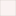

<!doctype html>
<html lang="en">
    <head>
        <meta charset="utf-8">
        <meta http-equiv="X-UA-Compatible" content="IE=edge">
        <meta name="viewport" content="initial-scale=1,user-scalable=no,maximum-scale=1,width=device-width">
        <meta name="mobile-web-app-capable" content="yes">
        <meta name="apple-mobile-web-app-capable" content="yes">
        <link rel="stylesheet" href="css/leaflet.css">
        <link rel="stylesheet" href="css/L.Control.Layers.Tree.css">
        <link rel="stylesheet" href="css/qgis2web.css">
        <link rel="stylesheet" href="css/fontawesome-all.min.css">
      
 
      <style>
        html, body, #map {
            width: 100%;
            height: 100%;
            padding: 0;
            margin: 0;
        }
        </style>
        <title></title>
    </head>
    <body>
        <div id="map">
        </div>
        <script src="js/qgis2web_expressions.js"></script>
        <script src="js/leaflet.js"></script>
        <script src="js/L.Control.Layers.Tree.min.js"></script>
        <script src="js/leaflet-svg-shape-markers.min.js"></script>
        <script src="js/leaflet.rotatedMarker.js"></script>
        <script src="js/leaflet.pattern.js"></script>
        <script src="js/leaflet-hash.js"></script>
        <script src="js/Autolinker.min.js"></script>
        <script src="js/rbush.min.js"></script>
        <script src="js/labelgun.min.js"></script>
        <script src="js/labels.js"></script>
        <script src="data/kecamatan_ppu_1.js"></script>
        <script src="data/rumah1_2.js"></script><link rel="stylesheet" href="plugins/src/Control.MiniMap.css" />
<script src="plugins/src/Control.MiniMap.js" type="text/javascript"></script>
<link rel="stylesheet" href="plugins/src/L.Control.ZoomBar.css" />
<script src="plugins/src/L.Control.ZoomBar.js" type="text/javascript"></script> 
        
        
        <script>
        var map = L.map('map', {
            zoomControl:false, maxZoom:28, minZoom:1
        }).fitBounds([[-2.1838959399444104,114.60435466826455],[0.32988298395820626,118.66354839908257]]);
        var hash = new L.Hash(map);
        map.attributionControl.setPrefix('<a href="https://github.com/tomchadwin/qgis2web" target="_blank">qgis2web</a> &middot; <a href="https://leafletjs.com" title="A JS library for interactive maps">Leaflet</a> &middot; <a href="https://qgis.org">QGIS</a>');
        var autolinker = new Autolinker({truncate: {length: 30, location: 'smart'}});
        // remove popup's row if "visible-with-data"
        function removeEmptyRowsFromPopupContent(content, feature) {
         var tempDiv = document.createElement('div');
         tempDiv.innerHTML = content;
         var rows = tempDiv.querySelectorAll('tr');
         for (var i = 0; i < rows.length; i++) {
             var td = rows[i].querySelector('td.visible-with-data');
             var key = td ? td.id : '';
             if (td && td.classList.contains('visible-with-data') && feature.properties[key] == null) {
                 rows[i].parentNode.removeChild(rows[i]);
             }
         }
         return tempDiv.innerHTML;
        }
        // add class to format popup if it contains media
		function addClassToPopupIfMedia(content, popup) {
			var tempDiv = document.createElement('div');
			tempDiv.innerHTML = content;
			if (tempDiv.querySelector('td img')) {
				popup._contentNode.classList.add('media');
					// Delay to force the redraw
					setTimeout(function() {
						popup.update();
					}, 10);
			} else {
				popup._contentNode.classList.remove('media');
			}
		}
        var zoom_bar = new L.Control.ZoomBar({position: 'topleft'}).addTo(map);
        var bounds_group = new L.featureGroup([]);
        function setBounds() {
        }
        map.createPane('pane_OpenStreetMap_0');
        map.getPane('pane_OpenStreetMap_0').style.zIndex = 400;
        var layer_OpenStreetMap_0 = L.tileLayer('https://tile.openstreetmap.org/{z}/{x}/{y}.png', {
            pane: 'pane_OpenStreetMap_0',
            opacity: 1.0,
            attribution: '',
            minZoom: 1,
            maxZoom: 28,
            minNativeZoom: 0,
            maxNativeZoom: 19
        });
        layer_OpenStreetMap_0;
        map.addLayer(layer_OpenStreetMap_0);
        function pop_kecamatan_ppu_1(feature, layer) {
            var popupContent = '<div style="margin-bottom:10px;"><strong>Keterangan:</strong> Berikut adalah data kecamatan yang berada di wilayah Kabupaten Penajam Paser Utara (PPU).</div>\
                <table>\
                    <tr>\
                        <td colspan="2">' + (feature.properties['OBJECTID'] !== null ? autolinker.link(String(feature.properties['OBJECTID']).replace(/'/g, '\'').toLocaleString()) : '') + '</td>\
                    </tr>\
                    <tr>\
                        <td colspan="2">' + (feature.properties['NAMOBJ'] !== null ? autolinker.link(String(feature.properties['NAMOBJ']).replace(/'/g, '\'').toLocaleString()) : '') + '</td>\
                    </tr>\
                    <tr>\
                        <td colspan="2">' + (feature.properties['SHAPE_Area'] !== null ? autolinker.link(String(feature.properties['SHAPE_Area']).replace(/'/g, '\'').toLocaleString()) : '') + '</td>\
                    </tr>\
                </table>';
            var content = removeEmptyRowsFromPopupContent(popupContent, feature);
			layer.on('popupopen', function(e) {
				addClassToPopupIfMedia(content, e.popup);
			});
			layer.bindPopup(content, { maxHeight: 400 });
        }

        function style_kecamatan_ppu_1_0(feature) {
            switch(String(feature.properties['NAMOBJ'])) {
                case 'Babulu':
                    return {
                pane: 'pane_kecamatan_ppu_1',
                opacity: 1,
                color: 'rgba(35,35,35,1.0)',
                dashArray: '',
                lineCap: 'butt',
                lineJoin: 'miter',
                weight: 1.0, 
                fill: true,
                fillOpacity: 1,
                fillColor: 'rgba(211,103,213,1.0)',
                interactive: true,
            }
                    break;
                case 'Penajam':
                    return {
                pane: 'pane_kecamatan_ppu_1',
                opacity: 1,
                color: 'rgba(35,35,35,1.0)',
                dashArray: '',
                lineCap: 'butt',
                lineJoin: 'miter',
                weight: 1.0, 
                fill: true,
                fillOpacity: 1,
                fillColor: 'rgba(95,121,223,1.0)',
                interactive: true,
            }
                    break;
                case 'Sepaku':
                    return {
                pane: 'pane_kecamatan_ppu_1',
                opacity: 1,
                color: 'rgba(35,35,35,1.0)',
                dashArray: '',
                lineCap: 'butt',
                lineJoin: 'miter',
                weight: 1.0, 
                fill: true,
                fillOpacity: 1,
                fillColor: 'rgba(127,233,191,1.0)',
                interactive: true,
            }
                    break;
                case 'Waru':
                    return {
                pane: 'pane_kecamatan_ppu_1',
                opacity: 1,
                color: 'rgba(35,35,35,1.0)',
                dashArray: '',
                lineCap: 'butt',
                lineJoin: 'miter',
                weight: 1.0, 
                fill: true,
                fillOpacity: 1,
                fillColor: 'rgba(213,136,117,1.0)',
                interactive: true,
            }
                    break;
                default:
                    return {
                pane: 'pane_kecamatan_ppu_1',
                opacity: 1,
                color: 'rgba(35,35,35,1.0)',
                dashArray: '',
                lineCap: 'butt',
                lineJoin: 'miter',
                weight: 1.0, 
                fill: true,
                fillOpacity: 1,
                fillColor: 'rgba(143,217,33,1.0)',
                interactive: true,
            }
                    break;
            }
        }
        map.createPane('pane_kecamatan_ppu_1');
        map.getPane('pane_kecamatan_ppu_1').style.zIndex = 401;
        map.getPane('pane_kecamatan_ppu_1').style['mix-blend-mode'] = 'normal';
        var layer_kecamatan_ppu_1 = new L.geoJson(json_kecamatan_ppu_1, {
            attribution: '',
            interactive: true,
            dataVar: 'json_kecamatan_ppu_1',
            layerName: 'layer_kecamatan_ppu_1',
            pane: 'pane_kecamatan_ppu_1',
            onEachFeature: pop_kecamatan_ppu_1,
            style: style_kecamatan_ppu_1_0,
        });
        bounds_group.addLayer(layer_kecamatan_ppu_1);
        map.addLayer(layer_kecamatan_ppu_1);
        function pop_rumah1_2(feature, layer) {
            var popupContent = '<table>\
                    <tr>\
                        <td colspan="2">' + (feature.properties['id'] !== null ? autolinker.link(String(feature.properties['id']).replace(/'/g, '\'').toLocaleString()) : '') + '</td>\
                    </tr>\
                    <tr>\
                        <td colspan="2">' + (feature.properties['davina_rmh'] !== null ? autolinker.link(String(feature.properties['davina_rmh']).replace(/'/g, '\'').toLocaleString()) : '') + '</td>\
                    </tr>\
                </table>';
            var content = removeEmptyRowsFromPopupContent(popupContent, feature);
			layer.on('popupopen', function(e) {
				addClassToPopupIfMedia(content, e.popup);
			});
			layer.bindPopup(content, { maxHeight: 400 });
        }

        function style_rumah1_2_0() {
            return {
                pane: 'pane_rumah1_2',
                shape: 'diamond',
                radius: 8.8,
                opacity: 1,
                color: 'rgba(128,17,25,1.0)',
                dashArray: '',
                lineCap: 'butt',
                lineJoin: 'miter',
                weight: 2.0,
                fill: true,
                fillOpacity: 1,
                fillColor: 'rgba(255,241,64,1.0)',
                interactive: true,
            }
        }
        map.createPane('pane_rumah1_2');
        map.getPane('pane_rumah1_2').style.zIndex = 402;
        map.getPane('pane_rumah1_2').style['mix-blend-mode'] = 'normal';
        var layer_rumah1_2 = new L.geoJson(json_rumah1_2, {
            attribution: '',
            interactive: true,
            dataVar: 'json_rumah1_2',
            layerName: 'layer_rumah1_2',
            pane: 'pane_rumah1_2',
            onEachFeature: pop_rumah1_2,
            pointToLayer: function (feature, latlng) {
                var context = {
                    feature: feature,
                    variables: {}
                };
                return L.shapeMarker(latlng, style_rumah1_2_0(feature));
            },
        });
        bounds_group.addLayer(layer_rumah1_2);
        map.addLayer(layer_rumah1_2);
        var overlaysTree = [
            {label: ' rumah1', layer: layer_rumah1_2},
            {label: 'kecamatan_ppu<br /><table><tr><td style="text-align: center;"></td><td>Babulu</td></tr><tr><td style="text-align: center;"></td><td>Penajam</td></tr><tr><td style="text-align: center;"></td><td>Sepaku</td></tr><tr><td style="text-align: center;"></td><td>Waru</td></tr><tr><td style="text-align: center;"></td><td></td></tr></table>', layer: layer_kecamatan_ppu_1},
            {label: "OpenStreetMap", layer: layer_OpenStreetMap_0},]
        var lay = L.control.layers.tree(null, overlaysTree,{
            //namedToggle: true,
            //selectorBack: false,
            //closedSymbol: '&#8862; &#x1f5c0;',
            //openedSymbol: '&#8863; &#x1f5c1;',
            //collapseAll: 'Collapse all',
            //expandAll: 'Expand all',
            collapsed: true,
        });
        lay.addTo(map);
        setBounds();
        var i = 0;
        layer_kecamatan_ppu_1.eachLayer(function(layer) {
            var context = {
                feature: layer.feature,
                variables: {}
            };
            layer.bindTooltip((layer.feature.properties['NAMOBJ'] !== null?String('<div style="color: #323232; font-size: 10pt; font-family: \'Open Sans\', sans-serif;">' + layer.feature.properties['NAMOBJ']) + '</div>':''), {permanent: true, offset: [-0, -16], className: 'css_kecamatan_ppu_1'});
            labels.push(layer);
            totalMarkers += 1;
              layer.added = true;
              addLabel(layer, i);
              i++;
        });
        resetLabels([layer_kecamatan_ppu_1]);
        map.on("zoomend", function(){
            resetLabels([layer_kecamatan_ppu_1]);
        });
        map.on("layeradd", function(){
            resetLabels([layer_kecamatan_ppu_1]);
        });
        map.on("layerremove", function(){
            resetLabels([layer_kecamatan_ppu_1]);
        });

        var osmForMinimap = new L.TileLayer('https://tile.openstreetmap.org/{z}/{x}/{y}.png', {minZoom:
0, maxZoom: 13, attribution: 'OpenStreetMap'});
var miniMap = new L.Control.MiniMap(osmForMinimap, {
toggleDisplay: true, // Bisa disembunyikan/ditampilkan
position: 'bottomleft' // Posisi di peta
}).addTo(map);
L.control.scale({
imperial: false, // Nonaktifkan satuan Imperial (kaki/mil)
metric: true, // Aktifkan satuan Metrik (meter/kilometer)
position: 'bottomright' // Posisi skala
}).addTo(map);
        </script>
    </body>
</html>
